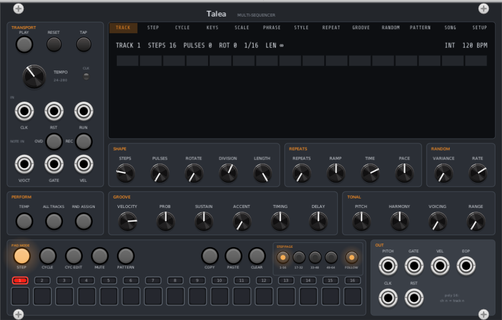

Talea
A 16-track multi-mode sequencer for VCV Rack 2 · User Manual
|
Overview
Sixteen tracks, each either a Euclidean / algorithmic sequencer or a plain step sequencer, with chords, note repeats,
grooves, phrases, randomness, cycles, sixteen patterns and a song mode, all in one module.

Talea IN, Talea and Talea OUT in VCV Rack. Click to enlarge
Talea is designed around the mouse and the screen. Every function has its own control or its own place on the display,
so nothing is hidden. Amounts are set with knobs, and choices from a list (scale, groove, phrase and so on) are picked by
name on the display, where every option is in view.
- 16 tracks, each with its own steps (up to 64), step length and loop length, so tracks can drift against each other.
- Two modes per track: EUCLID spreads pulses evenly over the steps and plays a note pool; SEQ is a step sequencer where every step has its own chord, velocity and gate.
- Chords of up to 8 notes, voiced and arpeggiated, kept in a scale, with full polyphonic output on the OUT expander.
- Note repeats with velocity ramps and speeding-up or slowing-down repeats.
- Grooves, swing, probability and per-parameter randomness.
- Step locks: any step can carry its own value of most parameters.
- Cycles: a track can play up to 8 variations of itself in turn.
- 16 patterns, chains and a song mode, plus Temp for edits you can throw away.
- Recording from a keyboard, live or step by step, in SEQ mode.
- MIDI out with a channel per track, MIDI clock, and CC tracks that send controller values.
- Hover tooltips on every control, jack and part of the display, and undo for every edit.
Contents
- Key ideas
- Quick start
- Transport & clock
- Perform buttons
- The knobs
- Pads & pad modes
- Step locks & step pools
- Cycles
- The display pages
- SEQ mode & recording
- Patterns, Temp & song
- Randomness
- CC tracks
- MIDI out
- Outputs
- IN & OUT expanders
- Context menu
- Tips & troubleshooting
|
Key Ideas
The selected track
The row of small numbered buttons above the pads selects a track. The knobs always show the selected track's values:
when you change track, they jump to that track's settings. CV and randomness never move a knob. Instead an orange
modulation ring around the knob shows where the value is playing right now, and the display's info line shows
stored>live, for example VEL 64>87.
Track groups
Ctrl+click track buttons to group them, or Shift+click to group a range from the selected track.
A knob turn then moves every grouped track by the same amount, each kept within its range. Grouped tracks light dim red
and the header reads GROUP. A plain click selects one track again. The ALL TRACKS button groups every track.
The context display
The large display has a tab for each page: TRACK, STEP, CYCLE, KEYS, SCALE, PHRASE, STYLE, REPEAT, GROOVE, RANDOM,
PATTERN, SONG and SETUP. Click a tab to open a page and click the options on it to change them. Turning a knob opens the
page that belongs to it (Range opens PHRASE, Voicing opens STYLE and so on). You can turn that off with Display follows
knobs in the context menu. The line along the bottom of the display (the info line) describes what you are
looking at or about to do.
Tooltips and undo
Hover over any knob, button, jack, light, page tab or option for a short description. Every edit, including pad clicks,
display options, copy, paste and clear, is one step in Rack's undo history (Ctrl+Z). Selections,
the pad mode and the displayed page aren't edits, so they aren't recorded.
Modifier clicks
Every action is a single click. Ctrl+click and Shift+click select several things at once, and
right-click opens menus and resets values.
|
Quick Start
- Add Talea and, directly to its right, Talea OUT. The OUT's green link light comes on when they touch.
- Patch OUT's track 1 Pitch, Gate and Vel into a polyphonic voice: an oscillator's V/Oct, an envelope's gate and a VCA. Make sure the whole voice is polyphonic (see Tips).
- Press PLAY. Track 1 is selected and silent, because a new track has no pulses.
- Turn PULSES up: the hits spread out over the 16 steps. Turn ROTATE to shift them.
- Open the KEYS page and click a few keys to build a chord (the track's note pool). Turn VOICING and pick a STYLE to move the chord around, or set PLAY to MONO on the STYLE page to arpeggiate it.
- Pick a scale on the SCALE page, then turn RANGE to let the notes climb along a phrase.
- Select track 2 and repeat with different STEPS and DIVISION. Uneven step counts drift against each other and make long, evolving patterns.
For a step sequence instead, open the SETUP page and set MODE to SEQ. Click a pad to select a step
and add its notes on the KEYS page (see SEQ mode).
|
Transport & Clock
| Control | What it does |
|---|
| PLAY | Starts and pauses the transport. Play resumes where it stopped. Pausing releases all gates. |
| RESET | Sends every track back to step 1. Kill stuck notes is in the right-click menu. |
| TAP | Tap in time to set the tempo (internal clock only). |
| TEMPO | Internal clock, 24–280 BPM, default 120. Ignored while CLK in is patched. |
| CLK light | Blinks on each quarter note. |
| CLK in | External clock triggers. The pulses per quarter note are set in the context menu (1, 2, 4, 8, 12, 24, 48 or 96; default 4). Positions between pulses are interpolated, so tracks with fine divisions stay smooth. |
| RST in | Trigger: every track back to step 1. |
| RUN in | Gate: plays while high. Set Run input to trigger in the context menu and each trigger toggles play instead. |
| REC, OVD | Recording from a keyboard into a SEQ-mode track, and overdub. See Recording. |
| NOTE IN V/OCT, GATE, VEL | Polyphonic keyboard input, for example from VCV MIDI>CV with its polyphony set to 8. In SEQ mode the keys also play on the selected track. See Recording. |
|
Perform Buttons
| Button | What it does |
|---|
| TEMP | While on, every pattern edit (knobs, steps, cycles, random, page options) is temporary. Click again to discard the changes and go back. Ctrl+click to keep them. Right-click for Keep / Discard. Mutes are never reverted, and mutes staged during Temp apply when it ends. The display shows a yellow TEMP tag. |
| ALL TRACKS | While on, knob turns move every track by the same amount (the header reads ALL). |
| RND ASSIGN | While on, turning a knob sets that parameter's random amount instead of its value: centre = none, clockwise up to +100 %, counter-clockwise down to −100 %. Opens the RANDOM page. See Randomness. |
|
The Knobs
The knobs set the selected track (or, with CYC EDIT on, the selected cycle). Many of them can also be locked per step.
Shape
| Knob | Range | What it does |
|---|
| Steps | 1–64, default 16 | Number of steps in the track's loop. |
| Pulses | 0–Steps, default 0 | Euclidean hits, spread as evenly as possible over the steps. 0 = silent. A new track starts at 0. |
| Rotate | 0–Steps−1 | Shifts the whole pattern along the steps, manual hits included. |
| Division | 1/1 to 1/64, triplets, free | Length of each step as a note value. Free moves continuously between note values. |
| Length | 1/64 to 16 bars, ∞ | Restarts the track after this long, whatever Steps is. At ∞ (the default) Steps alone sets the loop. Steps it cuts off are drawn faint. |
Repeats
| Knob | Range | What it does |
|---|
| Repeats | 0–48, ∞ | Extra triggers after each pulse. At ∞ they continue until the next pulse. Choke (the next pulse cuts them) or Tail (bursts overlap, up to 16) is set on the REPEAT page. |
| Ramp | ±100 % | Velocity across the repeats. Clockwise: builds up to Velocity. Counter-clockwise: fades down from it. |
| Time | 1 to 1/64, dotted and triplet | Spacing between repeats, always a note value. |
| Pace | ±, centre = even | Clockwise: the repeats slow down. Counter-clockwise: they speed up. At full turn the gap doubles (or halves) every 4 repeats. |
Groove
| Knob | Range | What it does |
|---|
| Velocity | 0–127, default 100 | Base velocity of the track's notes. |
| Probability | ±, centre = always | Chance notes play. Clockwise: any note can skip, repeats included. Counter-clockwise: pulses only (a skipped pulse skips its repeats). The same notes skip on every pass; shift which ones on the RANDOM page. |
| Sustain | 0–100 % | Gate length: 50 % = one step, 100 % = two (notes overlap and retrigger). |
| Accent | 0–100 % | Velocity variation around Velocity (up to ±63), shaped by the Groove chosen on the GROOVE page. |
| Timing | ±, centre = straight | Swing: every second step later (clockwise) or earlier (counter-clockwise). The subdivision is on the GROOVE page. |
| Delay | ±1 step | Moves the whole track later (clockwise) or earlier (counter-clockwise). |
Tonal
| Knob | Range | What it does |
|---|
| Pitch | ±4 octaves | Transposes the note pool in semitones, snapped to the scale, so with a scale some positions give the same notes. |
| Harmony | endless | Moves one chord note at a time: each clockwise detent moves the lowest pool note up a scale step, each counter-clockwise detent the highest down one. Turning back moves a different note, so right-click → Restore pool to undo a run of turns. |
| Voicing | 0–16 | How far the Style moves the chord: each position takes the lowest note up an octave (or the highest down). Style is on the STYLE page. |
| Range | 0–48 semitones | Adds up to this many semitones above the pool, following the Phrase over its length, snapped to the scale. Phrase is on the PHRASE page. |
Random
| Knob | Range | What it does |
|---|
| Variance | 0–100 % | The chance each of the track's 16 random values is re-rolled when the sequence comes round. 0 = the same values forever, 100 % = new values every pass. |
| Rate | 1/64 to 4 bars | How fast the track's random values advance. |
Right-click a knob for Rack's usual menu (type a value, reset). With COPY, PASTE or CLEAR armed,
clicking a knob copies, pastes or resets that one parameter instead of turning it.
|
Pads & Pad Modes
The 16 pads do one job at a time. The lit PAD MODE button shows which.
| Mode | What the pads do |
|---|
| STEP | The 16 steps of the selected track (the step page buttons pick which 16 of up to 64). Click turns a step's pulse on or off; these edits stay put when you change Pulses. Ctrl+click selects steps for step locks. In SEQ mode: click selects a step, right-click makes it a rest. Click STEP again to end a selection. |
| CYCLE | Pads 1–8 are the track's cycles. Click selects one (clicking past the last adds cycles). Ctrl+click mutes a cycle. The playing cycle flashes white. |
| MUTE | Pads are tracks (orange = playing, blue-grey = muted). Click a pad to stage a change (it blinks); click MUTE again to apply them all together. Ctrl+click mutes or unmutes at once. Right-click MUTE for the timing (now, beat, bar, pattern end) and whether muting lets notes finish or cuts them. Clicking a page tab leaves MUTE mode and drops staged changes. |
| PATTERN | Pads are the 16 pattern slots. Click queues a switch, Shift+click builds a chain, Ctrl+click switches at once. Right-click PATTERN for the switch timing and to clear the chain. |
Other pad-area buttons
| Button | What it does |
|---|
| CYC EDIT | On: knob turns change only the selected cycle, and only that cycle plays. Off: knobs move the track and every cycle's own value with it. The display shows a red CYC n EDIT tag. |
| COPY | Arms copy: the next click copies what you click: a track button (the whole track), a step, cycle or pattern pad, or a knob (one parameter). The clipboard isn't part of a pattern, so you can paste into another one. |
| PASTE | Arms paste (when something is copied): every matching target you click receives it, until you click PASTE again. A copied parameter can be pasted onto track buttons or cycle pads. |
| CLEAR | Arms clear: the next click resets what you click to its default (a knob also loses its random amount). Ctrl+click CLEAR to keep it armed until you click it again. |
| Step page 1–16 … 49–64 | In STEP mode, which 16 steps the pads show. Pages past the track's Steps are off. Picking a page turns Follow off; a page's light blinks while the playhead is on it and another page is shown. |
| FOLLOW | The pads and the STEP page follow the playhead's page. |
| Track buttons 1–16 | Click selects a track (in any pad mode). Ctrl+click adds or removes a track from the group, Shift+click groups a range. Light: white flash on the track's notes, red = selected, dim red = grouped, blue-grey = muted, dim orange = holds something other than defaults. |
|
Step Locks & Step Pools
In STEP pad mode, Ctrl+click pads to select steps (they light blue and the display shows a LOCK tag). While
steps are selected, the knobs show the first selected step's value, and turning a knob writes that value as a
lock on every selected step. These can be locked: Repeats, Ramp, Time, Pace, Velocity, Probability, Sustain,
Accent, Timing, Delay, Pitch, Voicing and Range. Steps, Pulses, Rotate, Division and Length set the loop, so they
can't be locked and their knobs dim.
A locked step plays its lock on its pulse and its repeats; randomness still applies on top. Steps with locks show light
blue. The STEP page shows a lane for each locked parameter (up to 4): click or drag in a lane to set values across
steps, right-click to remove a lock.
With steps selected, the KEYS page edits a step pool: the selected steps get their own chord or note instead
of the track's pool (Pitch, Voicing, Style and Range still apply). TRACK POOL on the KEYS page removes it again.
Outside CYC EDIT, locks belong to the track and every cycle plays them. In CYC EDIT they go to the edited cycle only.
Click STEP again, change track or leave STEP mode to end the selection. Copy, paste and clear work on step pads too.
|
Cycles
A track can have up to 8 cycles. Each time the track finishes a loop (its Length, or one pass of its Steps), it
moves on to its next cycle. A cycle starts out identical to the track. Give it changes of its own and the track plays a
different variation each time round, for example a fill on every fourth bar.
- Set the number of cycles on the CYCLE page (COUNT), or click past the last cycle in CYCLE pad mode.
- Select a cycle and turn on CYC EDIT. Only that cycle plays, and everything you change goes to it: knobs, step on/off edits, locks, scale and pool, phrase, mode and sequence.
- With CYC EDIT off, turning a knob moves the track and every cycle's own value together, so the variations keep their differences.
- On the STEP and TRACK pages, each cycle has a lane showing how it plays. On the pads, dim red marks a step the playing cycle adds and dark orange a step it drops.
- CLEAR on the CYCLE page removes a cycle's own changes: all of them, or one item (step edits, locks, scale, sequence, mode, a parameter or a random amount).
- A muted cycle keeps the track silent while it plays.
|
The Display Pages
| Page | What's on it |
|---|
| TRACK | The selected track's Steps, Pulses, Rotate, Division and Length, the clock (INT or EXT) and tempo, and the current 16 steps with the playhead. With several cycles, a lane per cycle showing how each plays. |
| STEP | The current 16 steps, with a lane per locked parameter (click / drag to edit, right-click removes). In SEQ mode: velocity (N.VEL) and GATE lanes. With several cycles, a lane per cycle. |
| CYCLE | COUNT of cycles, the CYCLE being edited (* = has its own changes, (n) = muted), MUTE, and CLEAR for the cycle's own changes. |
| KEYS | A 4-octave keyboard (the arrows shift it an octave). Click keys to build the track's note pool (up to 8 notes; keys off the scale can't be added). With steps selected it edits their step pool, and in SEQ mode the selected step's chord. A dot marks every note sounding now. |
| SCALE | SCALE and ROOT, and NOTES: a one-octave keyboard. Click a note there to add it to or remove it from the scale, which then becomes the User scale. |
| PHRASE | The contour Range follows: Cadence 1–4, Saw, Triangle, Sine, Pulse, CV (from the IN expander) or User (draw it on the grid). Its length in bars (or loops), and SYNC: BARS runs on pattern time, LOOP restarts with the track's loop. |
| STYLE | STYLE: the path through the Voicing positions (Fixed, Ramp, Climb, Up/Down, Climb Up/Down). PLAY: POLY chords or MONO arpeggio. VOICE: UP takes the lowest note up an octave, DOWN the highest down. |
| REPEAT | One burst of repeats drawn out, and MODE: CHOKE (the next pulse cuts the repeats) or TAIL (bursts overlap). |
| GROOVE | GROOVE: the Accent shape, either a one-bar percussion pattern (Agogo, Timbales, Congas, Bongo) or a waveform over a length. Its length, SWING subdivision (every second unit of 1, 2 or 4 steps moves), and SYNC. |
| RANDOM | Every parameter's random amount, and whether it changes each cycle loop (C) or at the Random Rate (R). The SEQ row: REGEN, PHASE, LOCK, PROB and SLEW. CLEAR removes amounts. See Randomness. |
| PATTERN | PLAY queues a slot, COPY TO copies the playing pattern into a slot (TEMP TO with Temp on), CLEAR resets a slot, SWITCH sets when a queued switch happens. |
| SONG | A song: up to 64 entries, each a pattern played for a number of bars. See Song mode. |
| SETUP | MIDI CH for the track, MIDI CLOCK out, TYPE (NOTE or CC), MODE (EUCLID or SEQ), CYC MODE (in CYC EDIT), and the CC number for CC tracks. |
Scales: Chromatic, Major, Natural Minor, Harmonic Minor, Melodic Minor, Dorian, Phrygian, Lydian, Mixolydian,
Locrian, Major Pentatonic, Minor Pentatonic, Blues, Major Blues, Whole Tone, Diminished (H-W), Diminished (W-H),
Phrygian Dominant, Hungarian Minor, Double Harmonic, Japanese (In), Hirajoshi, Arabic, and User. Scale, root and pool
are per track, and a cycle can have its own.
|
SEQ Mode & Recording
Any track, or any single cycle of a track, can be a classic step sequencer instead of a Euclidean one.
Set MODE to SEQ on the SETUP page (or use the context menu). Each step holds a chord of up to 8 notes
(or nothing: a rest), its own velocity, and a gate length in steps. A gate longer than one step ties the note over the
following steps until it ends or the next step with notes cuts it. Steps, Division and Length still set the loop, so
cycles, randomness and patterns work as usual. When you switch an empty track to SEQ, it is filled from the hits that
were playing, so the rhythm carries over.
Editing steps
- Click a pad (STEP mode) to select that step. It lights green and the KEYS page shows its notes.
- On the KEYS page, click keys to add or remove notes from the selected step's chord. REST removes all its notes.
- Right-click a pad to make that step a rest.
- Ctrl+click pads to select several steps for locks (blue). KEYS then edits all of them together.
- The STEP page shows N.VEL (velocity) and GATE lanes: click or drag to set, right-click for the default.
- Copy, paste and clear on a step pad include its notes; on a track button, its whole sequence.
What applies in SEQ mode
Notes play as entered, plus Pitch and Transpose, kept in the scale. Velocity locks, randomness, IN-expander CV,
Accent, Ramp, Probability, Repeats, Timing, Delay and Sustain (which shapes the last step of each gate) still apply.
Pulses, Rotate, Harmony, Voicing and Range have no effect: their knobs dim and don't turn, and the PHRASE and STYLE
pages dim. The Velocity knob sets the velocity of new notes.
Scales in SEQ mode
With any scale other than Chromatic, the track stays in the scale. Wherever a note outside it would appear, it moves to
the nearest scale note, and when two are equally near it goes up. In a seven-note scale like Major, every
note outside the scale is a tie, so it always goes up. In scales with wider gaps the nearer note wins: in C major
pentatonic, F becomes E.
- On the KEYS page, keys outside the scale are dimmed and can't be added. A note already in the chord can still be removed.
- Notes from NOTE IN are moved into the scale before they sound and before they're recorded, so what's recorded is what you heard.
- After Pitch and Transpose, the notes are moved into the scale again.
- Changing the scale, root or a User note moves the stored notes onto the new scale. Notes that land on the same note merge. Switching back doesn't restore them, but the change is one undo step: Ctrl+Z brings them back. Changing the root moves notes into the new key; it doesn't transpose them (use Pitch or Transpose for that).
Recording
Patch a keyboard into NOTE IN: polyphonic V/Oct, Gate and (optionally) Velocity, for example from VCV MIDI>CV
with its polyphony set to 8. Select a SEQ-mode track and press REC. Notes go into the selected track's sequence,
or the edited cycle's in CYC EDIT.
- Playing: live recording (REC light solid). Each note goes to the nearest step, and its length is rounded to whole steps. Keys played together form a chord.
- Stopped: step recording (REC light blinking). Each chord you play goes to the cursor step (the blinking red pad), and when you let go of all keys the cursor moves to the next step. Click a pad to move the cursor.
- OVD (overdub): with it off (the default), notes played on a step that already has notes replace them. With it on, they're added to the step's chord.
- One recording, from REC on to REC off, is one undo step.
- Unpatched VEL: notes take the Velocity knob's value.
Monitoring
In SEQ mode, the keys you hold at NOTE IN always sound on the selected track's outputs (main jacks, OUT expander and
MIDI), with REC on or off. While you hold keys they take over the track's outputs from its sequence. Adding keys to a held
chord doesn't retrigger the gate.
|
Patterns, Temp & Song
Patterns
Talea holds 16 patterns. A pattern is the whole state of the 16 tracks. Switch with the pads in PATTERN mode, the
PATTERN page or the IN expander's Pattern input. A switch waits for the SWITCH timing (now, beat, bar or end of pattern;
when stopped it is immediate), restarts every track from step 1 and ends Temp. Shift+click pattern pads to
build a chain: each time a pattern ends, the next one in the chain starts, round and round. The module's
patterns are saved with the patch, and as a module preset through Rack's Preset menu.
Temp
Turn on TEMP to experiment: every edit is temporary until you decide. Click TEMP again to throw the changes away,
or Ctrl+click it to keep them. On the PATTERN page, TEMP TO saves the current state into another slot.
Song mode
The SONG page arranges patterns into a song of up to 64 entries, each playing one pattern for a number of bars
(1–999). Click + to add the playing pattern, click an entry to select it, and use the mouse wheel over an
entry to change its bars. The rows edit the selected entry: PATTERN, BARS (or PAT = the pattern's own
length) and EDIT (add, insert, delete, clear song). With the SONG page open in PATTERN pad mode, clicking a pattern
pad adds that pattern to the song.
- SONG ON starts song mode. Each entry plays its pattern for its bars, then the next entry starts on the bar line.
- LOOP returns to the first entry at the end. Without it the sequencer stops.
- FOLLOW keeps the playing entry in view.
- Switching patterns by hand takes over from the song. SONG ON blinks, and clicking it resumes the song where it left off, on the next bar line.
|
Randomness
Each track has a random sequence of 16 values per parameter. To randomise a parameter, turn on RND ASSIGN and
turn its knob: the amount is bipolar, so clockwise pushes the value up (by up to the amount times the parameter's range)
and counter-clockwise pushes it down. Steps, Division and Length can't be randomised, because they set the loop length.
- Variance sets how often values are re-rolled; at 0 the same 16 values repeat forever, so random can be a fixed, repeatable variation.
- Rate sets how fast values advance. On the RANDOM page, click a parameter's C / R to make it change once per cycle loop instead.
- REGEN rolls new values (also by trigger at the IN expander's REGEN). PHASE shifts the sequence. LOCK freezes the values as they are now. PROB shifts which notes Probability skips. SLEW glides between values.
- Random values never move the knobs; the orange modulation ring shows them.
|
CC Tracks
Set TYPE to CC on the SETUP page and the track plays values instead of notes, for modulating anything.
The rhythm works as usual; each pulse sends a value:
- Value = Velocity (0–127), with locks, randomness, CV, Accent and Ramp.
- Glide = Sustain: 0 jumps to the new value, higher settings glide to it (100 % = across the whole gap).
- The track's Pitch output carries the value as 0–10 V. MIDI sends it as Control Change on the track's channel, using the number set with CC x10 and CC x1 (0–119, default 1 = mod wheel).
- The pitch settings and the KEYS, SCALE, PHRASE and STYLE pages don't apply.
|
MIDI Out
Choose a device under MIDI in the right-click menu. Each track sends on its own channel (SETUP page MIDI CH;
track n defaults to channel n, and OFF sends nothing). MIDI follows the gate outputs exactly: full chords,
transposition and velocity, and muted tracks send nothing. Stop, Reset and pattern switches end sounding notes, and
Kill stuck notes also sends All Notes Off on every channel.
CLOCK on the SETUP page sends MIDI clock (24 PPQN) with Start, Continue and Stop.
MIDI is sent as Rack processes audio, so keep an Audio module with a device selected in any patch that sends MIDI,
even with nothing patched into it. Without one, timing can be uneven.
|
Outputs
| Jack | What it sends |
|---|
| PITCH | Polyphonic, 16 channels: channel n = track n, V/Oct. A chord's lowest note; full chords come out of the OUT expander. |
| GATE | Polyphonic, channel n = track n. Repeats included. |
| VEL | Polyphonic, channel n = track n. 0–10 V (127 = 10 V), Accent and Ramp included. |
| EOP | Trigger at the end of each pattern loop (the longest track's period) and on each pattern switch. |
| CLK | Clock pulses while playing, at the PPQN set in the context menu. |
| RST | Trigger on each reset. |
To use the main outputs one track at a time, split them with a polyphonic splitter (for example VCV Split).
|
IN & OUT Expanders
Talea OUT
Place it directly to the right of Talea (the green link light shows it's connected). It has a Pitch, Gate and Vel
jack for each of the 16 tracks, carrying full chords, one voice per channel.
- Each output has a fixed number of channels: Polyphony (channels) in the right-click menu, 1–8, default 8. The count never changes while playing, so polyphonic envelopes and VCAs downstream keep every voice.
- Each voice has its own gate, and keeps its pitch and velocity after its gate falls, so release tails sound on the right note. Unused voices stay low.
- A chord puts note 1 on channel 1, note 2 on channel 2 and so on. Keys played live (SEQ monitoring) keep their channel while held, like VCV MIDI>CV.
- MONO arpeggios use channel 1, as do CC tracks (the value, 0–10 V).
- Each track's light: dim orange = idle, white = gate, blue-grey = muted.
Talea IN
Place it directly to the left of Talea. All of its CV inputs are polyphonic, channel n = track n; a mono
cable feeds every track.
- CV → PARAMETER: a CV input with an attenuverter for each knob parameter (Pulses, Rotate, Repeats, Ramp, Time, Pace, Velocity, Probability, Sustain, Accent, Timing, Delay, Pitch, Voicing, Range). ±5 V × the attenuverter covers the parameter's full range, added on top of the knob, locks and randomness.
- XPOSE (transpose): V/Oct, transposes the notes (kept in the scale).
- PHRASE: drives the phrase of tracks whose Phrase is set to CV (−5 to +5 V = bottom to top).
- PATTERN: 0–10 V selects pattern 1–16.
- TEMP: Temp is on while the gate is high.
- MUTES: high = muted; a patched track follows its gate at each change. APPLY: a trigger applies staged mutes.
- REGEN: a trigger rolls new random values for the track.
|
Tips & Troubleshooting
- Only one note of a chord sounds. The whole voice must be polyphonic: oscillator, envelope, filter and VCA. A mono VCA (or mixer) in the chain plays channel 1 only. Also check that you're using the OUT expander, since the main PITCH jack carries one note per track.
- Notes cut off early. Use the OUT expander with its Polyphony set to the number of voices your synth runs. The channel count stays fixed so releases finish.
- Nothing plays on a new track. A new track has 0 pulses: turn up Pulses, or switch it to SEQ mode and enter notes.
- A knob won't turn. It's dimmed because it has no effect right now: in SEQ mode (Pulses, Rotate, Harmony, Voicing, Range), with steps selected (Steps, Pulses, Rotate, Division, Length can't be locked), or under Rnd Assign (Steps, Division, Length).
- Uneven MIDI timing. Keep an Audio module with a device selected in the patch. If another program holds an exclusive ASIO driver, don't use the same driver in Rack: use WASAPI or another device.
- Stuck notes: right-click Talea → Kill stuck notes.
- Long, evolving patterns: give tracks different Steps or Lengths (e.g. 16, 13 and 7 steps). They drift against each other and only line up again after a long time.
|
|